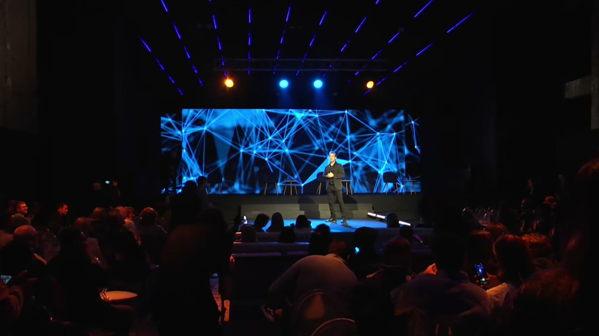

La económica 1982
La casa hipotecada
Emilio J. Curcio fundó AYAX en 1945. En 1982 hipotecó todo, incluso la casa familiar, para sostener la empresa — Alejandro nunca lo vio quejarse. La crisis vuelve entre 1999 y 2001, con él ya adentro: entró en 1995, director joven, con la casa tambaleando otra vez.
“Mi padre nunca se da por vencido, incluso teniendo todos los pronósticos en contra.”
“Mente fría, corazón caliente.”